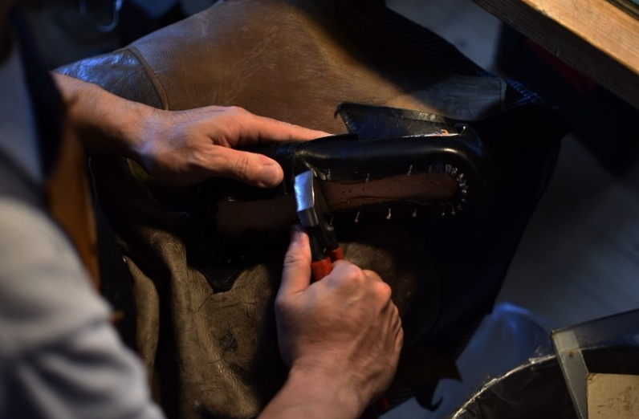

1976年生まれ。 京都・綾部で手製靴ブランド 「Ne peut pas partir」を主宰しています。
私は長く金属加工の職人として働いてきました。 図面通りに正確なものを作る世界で技術を学び、 素材と向き合う姿勢を身につけました。
その後、もっと人の暮らしに近いものを作りたいという思いから、 靴づくりの道へ進みました。
靴は単なる道具ではありません。 歩いた時間を受け止め、 その人の記憶とともに変化していく存在です。
工房には木型が並び、 革の匂いが漂い、 長年使い続けた道具があります。
その場所で一足ずつ、 静かに手を動かしながら制作を続けています。